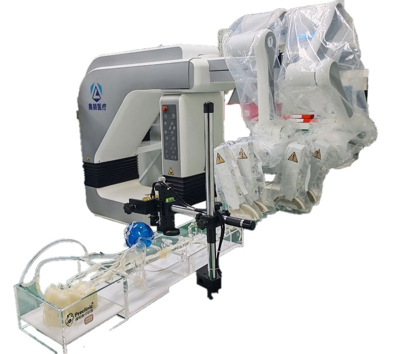

Commercial and clinical-stage systems · allvas_aopeng2021
ALLVAS
ALLVAS (REIS)

1 / 9


- Family
- Commercial and clinical-stage systems (clinical-stage)
- Devices
- four manipulators with double V-grippers handle devices from a 0.014-in (0.36 mm) guidewire to a 40 mm stent-graft system (song2022_biomimetic p. 5); 2-3 devices at once in the porcine cases (catheter + guidewire, or stent-graft system, inner core and guidewire in TEVAR) (p. 10); up to 4 devices (song2023_novel); compatible with market devices
- Degrees of freedom
- 18 (slave: two three-axis arms and four manipulators, each manipulator with two DC motors and a stepper; song2022_biomimetic p. 4, 7); '12-DOF motion in the four directions of the short axis' (p. 14); 12 per mandhumula2025_robotic as REIS
- Push
- Clamp relay
- Twist
- Rotating clamp
- Tested up to
- Human
- Sim-to-real
- Yes — A controller or perception model trained in simulation ran on this robot.
Testing
- Highest level
- Human
- What was tested
- EVAR 5 pts (song2023_novel); 4 pts programmed steps (liang2025_unleashing); 1 remote PCI 800 km (Xu 2024); animal: 10 domestic swine (45 kg), 38 robotic cases (PCI 8, TEVAR 4, renal stent 8, iliac stent 10, IVC filter 8), 5 surgeons, plus a 3D-printed aorto-iliac model (song2022_biomimetic p. 9-12)
- Key numbers
- EVAR 5/5, operator dose -96.5% (song2023_novel abstract); remote PCI latency 30 ms, 800 km (chen2026_teleoperation Table I); swine: all technically successful, no adverse events, PCI operator dose 24.6 +- 2.72 uGy robotic vs 2224 +- 92.5 manual (the manual operator values equal the manual patient values in every column, possibly a table error), operative time not different, device exchange within 10 s, rotation accuracy 1 degree (song2022_biomimetic Table 2, p. 14)
Mechanism
- Push (translation)
- clamp-relay
- Twist (rotation)
- rotatable V-grippers, continuous progressive rotation with relay gripper (song2023_novel)
- Device range
- max axial speed 275 mm/s, min 5.15 mm/s, max thrust 27.45 N, max displacement 140 cm (song2022_biomimetic Table 1); rotation speeds 1.57 and 0.52 rad/s (p. 7)
- Target anatomy
- aortic (EVAR), peripheral, coronary (one remote PCI)
Sensing and interface
- Force sensing
- force feedback; force sensor on the manipulator (type N.R.), in vitro feedback delay < 60 ms, peak error 0.15 N (song2022_biomimetic p. 8); automatic mode halts above 2 N (liang2025_unleashing)
- Leader and haptics
- joysticks on a console outside the cath lab: button = clamp/release, knob = rotate, swing = advance/retract; force-feedback handle based on electromagnetic resistance (song2022_biomimetic p. 3, 7, 14; the paper says both 'four joysticks' and 'two sets of master joysticks')
- Imaging
- mobile base, arm + manipulator
- Sterility
- detachable grippers, aimed at replacing all contact parts (song2022_biomimetic abstract, p. 14); single-use status N.R.
Size
- Footprint (mm)
- N.R.
- Mass (kg)
- N.R.
Simulation
- Simulation model
- yes for vessels/wire: SOFA-based training platform of Tongji group (yao2025_sim4endor, full); no model of the robot itself found
- Sim-trained controller
- YES: chen2026_learning (SAC + MPC filter, sim 49/50 -> phantom 18/20, full, IROS 2026); tian2026_visionlanguage (phantom 30/30, full); Tongji group lists 7 papers on ALLVAS/SOFA (S7b.md); liu2024_autonomous trained on robot not sim
- Studies on this robot
- 2026 · Learning Expert Strategy for Autonomous Robotic Endovascular Intervention via Decoupled Procedural Execution — sim 98%, 96%, 98% (50 episodes per target); SAC alone 92/94/90%; robot 18/20 (90.0%), 4.2 +/- 0.8 min per trial
- 2026 · Vision-Language Procedural Reasoning for Context-Aware Reward Modeling of Robotic Endovascular Guidewire Navigation — sim N.R.; robot 100%, 97%, 100% with VLM-shaped reward; SAC alone 70%, 73%, 73%; expert manual 93%, 97%, 100%
Versions
- Lineage
- ALLVAS; predecessor: the group's first-generation robot ('similar to the first-generation surgical robot initially studied by our research group', song2022_biomimetic p. 14, refs 13-14 = Wang 2018 IJMRCAS 14:e1915 and Lu 2020 VES 54:598-604; not read) -> 2022 biomimetic system, 38 porcine cases (song2022_biomimetic; robot unnamed there, identified as ALLVAS by song2023_novel, which cites it) -> 2023 EVAR in patients (song2023_novel); 2022: Changhai (Q. Lu) remote-controlled robot driven by hollow ultrasonic motors, ex vivo phantom (Lu 2022) (Alekseeva 2025 Table 7 row 1, Fig. 13e; Belikov 2024 Fig. 6 QIN) (alekseeva2025_design; belikov2024_evolution)
Sources
- A novel endovascular robotic-assisted system for endovascular aortic repair: first-in-human evaluation of practicability and safety · European Radiology, 2023 · doi:10.1007/s00330-023-09810-x [song2023_novel]
- Novel Endovascular Interventional Surgical Robotic System Based on Biomimetic Manipulation · Micromachines, 2022 · doi:10.3390/mi13101587 [song2022_biomimetic]
- Unleashing the Potential: First-in-Human Evaluation of Automatic Robotic-Assisted Endovascular Aortic Repair for Standardized Therapies · MedComm, 2025 · doi:10.1002/mco2.70489 [liang2025_unleashing]
- Remote Teleoperation of Endovascular Intervention Robots: A Systematic Review · IEEE Transactions on Medical Robotics and Bionics, 2026 · doi:10.1109/TMRB.2026.3681030 [chen2026_teleoperation]
- Learning Expert Strategy for Autonomous Robotic Endovascular Intervention via Decoupled Procedural Execution · link [chen2026_learning]
- Vision-Language Procedural Reasoning for Context-Aware Reward Modeling of Robotic Endovascular Guidewire Navigation · link [tian2026_visionlanguage]
- Autonomous Guidewire Navigation for Robot-assisted Endovascular Interventions: A Knowledge-Driven Visual Guidance Approach · link [liu2024_autonomous]
- The Design of Endovascular Robots for Cardiac Interventions: A Survey · Journal of Field Robotics, 2024 · doi:10.1002/rob.22480 [alekseeva2025_design]
- Evolution and current state of robotic catheters for endovascular surgery: A comprehensive review · Engineering Science and Technology, an International Journal, 2024 · doi:10.1016/j.jestch.2024.101789 [belikov2024_evolution]
Notes
- Notes
- NMPA registration not verified. Only commercial-grade robot with simulation-trained controllers on hardware (phantom only). | X2 2026-11-08: song2022 (Micromachines, CC BY 4.0) read in full: 18 DOF (12 was the short-axis count), 38 swine cases.
This record
- Read level
- full — full (song2022_biomimetic); partial (S8) for the rest
- Picture
- tian2026_visionlanguage (arXiv 2606.30698) Fig. 3(a), native image xref 313 with the authors' soft mask, p5 ↗ — licence: CC BY 4.0 (both arXiv licences checked on arxiv.org/abs); grade C
- Picture changes
- full native image 777x690 with the authors' alpha, flattened on white; cut = authors' alpha (no SAM)
- Found by
- commercial: Search of commercial and clinical-stage systems.
- Data
- JSON · YAML:
records/robots/allvas_aopeng2021.yaml - Correction
- Suggest a correction [repository not created yet]